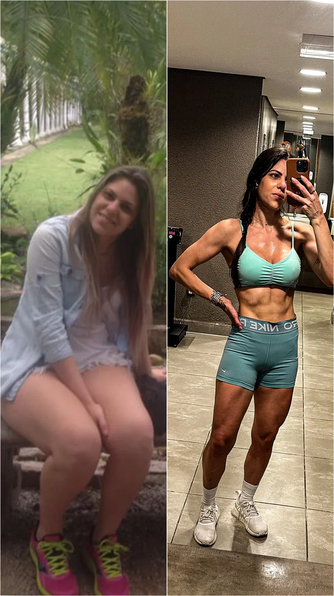
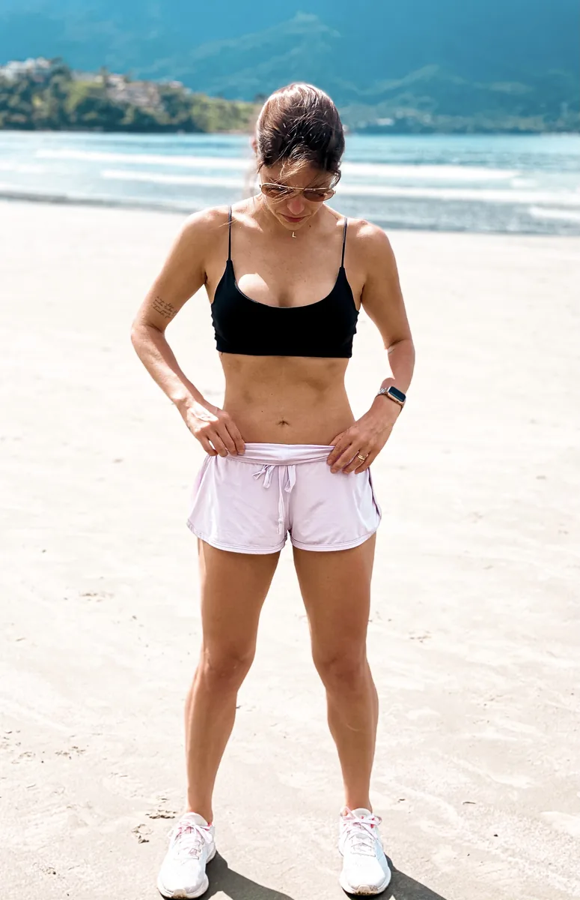

Eu emagreci porque cansei.

Se você chegou até aqui, provavelmente já me viu falando sobre rotina, constância e comida de verdade. O que talvez você não saiba é que essa história começou exatamente no lugar onde você talvez esteja agora: no cansaço.
Os anos de tentativa e erro
Convivi com o sobrepeso até por volta dos meus 30 anos. E como quase toda mulher que passa por isso, tentei de tudo. Restrição, corte radical, uma estratégia nova a cada mês. O roteiro você conhece de cor: algumas semanas (ou alguns dias) de controle absoluto, depois a compulsão, depois a culpa, depois recomeçar na segunda.
Eu era dedicada em todas as outras áreas da vida, daquelas que não sossegam enquanto não conseguem o que querem. Era advogada, dava conta de prazo, de audiência, de cliente difícil. Só com a comida nada se sustentava. E eu achava que o problema era eu.
O dia em que eu decidi
Sim, precisou existir um limite. Houve um dia em que eu me dei conta de que o pensamento "não dá pra ficar pior" era uma grande falácia, afinal, sempre dá pra piorar.
Então uma vida insatisfeita, mil dietas e uma cirurgia plástica depois, me dei conta que não dava mais pra esperar resultados milagrosos dentro da mesma rotina, e eu finalmente decidi que ia mudar, não importava o custo.
Foi menos bonito e mais bruto do que parece: eu fui atrás.
A pandemia foi a minha chance
Pode soar estranho falar isso, mas a pandemia mudou o rumo da minha vida.
Meu problema nunca foi a comida dentro de casa. Era fora. Era o impulso, o convite, o "só hoje", a mesa posta na frente. Quando o mundo parou e eu fiquei em casa, eu enxerguei ali uma chance de finalmente conseguir me controlar.
E aqui preciso fazer um adendo importante, de fato somos aquilo que consumimos e com o isolamento eu passei a consumir muito mais conteúdo de valor na internet. Isso foi um grande gatilho pra mudança completa.
Mas para além da vontade, eu precisava de estrutura, então criei mecanismos que me segurassem quando a vontade sumisse. Contratei personal. Me comprometi com ioga e pilates, coisas com horário e com alguém me esperando. E comecei a correr.
A corrida me ensinou a suportar desconforto
Naquele momento, mais do que me apaixonar pelo esporte em si, entendi que era a oportunidade perfeita de melhorar minha resistência, não só física, a mental.
Eu nunca suportei desconforto. Nunca. E correr é se colocar no desconforto de propósito, todo dia, um pouquinho a mais. Um quilômetro que ontem parecia impossível e hoje deu. Um minuto a mais de fôlego. Uma subida inteira sem parar.
Esse retorno constante, pequeno e visível, foi o que me deu disciplina. E a disciplina virou constância. E a constância trouxe o resultado.
Enquanto o mundo inteiro engordava, eu emagreci mais de 20 quilos.

A comida: regra funciona pra mim, cardápio não
No meio disso eu precisei descobrir que tipo de alimentação funcionava pra mim de verdade.
E aí veio uma coisa que eu levei tempo pra admitir: apesar de adorar regras, eu não me dava bem com cardápios. Bastava alguém escrever num papel que eu tinha que comer aquilo, e na hora eu não queria mais. Não era falta de vontade de emagrecer. Era o jeito que a minha cabeça funciona.
Então eu inverti. Em vez de seguir um cardápio, aprendi a cozinhar com mais sabor. Inventei receita. Testei. O que dava certo, eu repetia. O que não dava, eu deixava pra trás sem culpa.
Foi assim, cozinhando e repetindo o que funcionava, que eu finalmente conquistei o corpo que eu queria.
O que mudou além do corpo
Essa é a parte que ninguém vê na foto.
Eu era uma pessoa negativa e reativa. Vivia na defensiva. Quando eu comecei a cumprir o que prometia pra mim mesma, dia após dia, aquilo mexeu com a minha cabeça de um jeito que não tem volta. Eu comecei a confiar em mim. E aquela casca de reatividade que eu carregava foi amolecendo aos poucos.
Emagrecer mudou meu corpo. Provar pra mim mesma que eu era capaz mudou tudo o resto.
E foi assim que eu larguei o Direito
No meio desse processo eu entendi que a advocacia não era mais pra mim.
E quando a gente vive uma coisa boa, dá vontade de dividir. Comecei a contar o que estava fazendo na internet, sem plano nenhum. Aí veio a vontade de fazer disso uma profissão, com base, com responsabilidade.
Me formei em Nutrição pra transformar aquilo numa profissão de verdade.
Por que eu atendo do jeito que atendo
Tudo no meu método existe porque eu vivi a falta dele.
Eu explico o porquê de cada orientação, porque passei anos obedecendo regra que eu não entendia e por isso mesmo não sustentava.
Eu respeito as fases do corpo, porque tentar performar igual todos os dias foi o que me fez desistir tantas vezes.
Eu prego consistência acima de perfeição, porque foi a perfeição que me manteve presa no ciclo restrição, compulsão e culpa.
E eu trabalho pela sua autonomia, porque o meu objetivo nunca foi que você dependa de mim. É que você aprenda a se conduzir sozinha.
Eu não tive método. Eu tive teimosia, tentativa e erro, e uma pandemia inteira pra descobrir sozinha o que funcionava comigo. Meu trabalho hoje é encurtar esse caminho pra você.
Emagrecer de vez não é sorte. É método.
Se a minha história parece com a sua, eu quero te acompanhar.